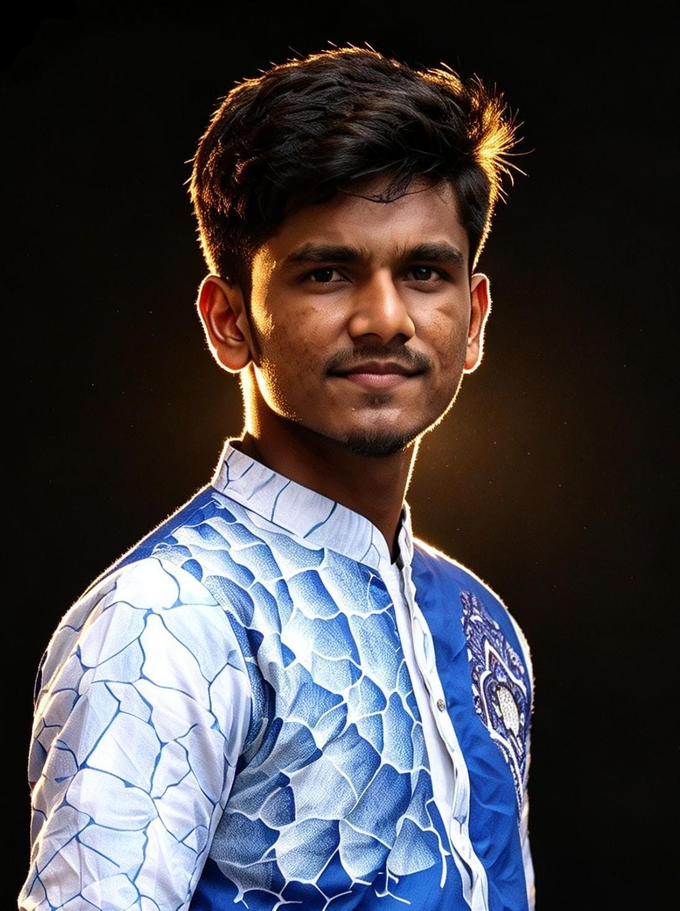

Md. Zihad Hossen
Founder & CEO of A To Z Cleaner
I am currently pursuing a degree in Computer Science and Engineering (CSE) at Presidency University. I have a strong interest in entrepreneurship, technology, and business development.
f Facebook Profile 📍 Gulshan-2, Dhaka, Bangladesh

About Me
As the founder of A To Z Cleaner, my goal is to build a reliable and professional cleaning service that makes everyday life easier for individuals and businesses.
I believe in customer satisfaction, quality service, and building long-term relationships through trust, honesty, and commitment. I am passionate about learning, developing new ideas, and growing a business that creates real value for customers.
My Vision
To make professional cleaning services more accessible, reliable, and convenient for everyone.